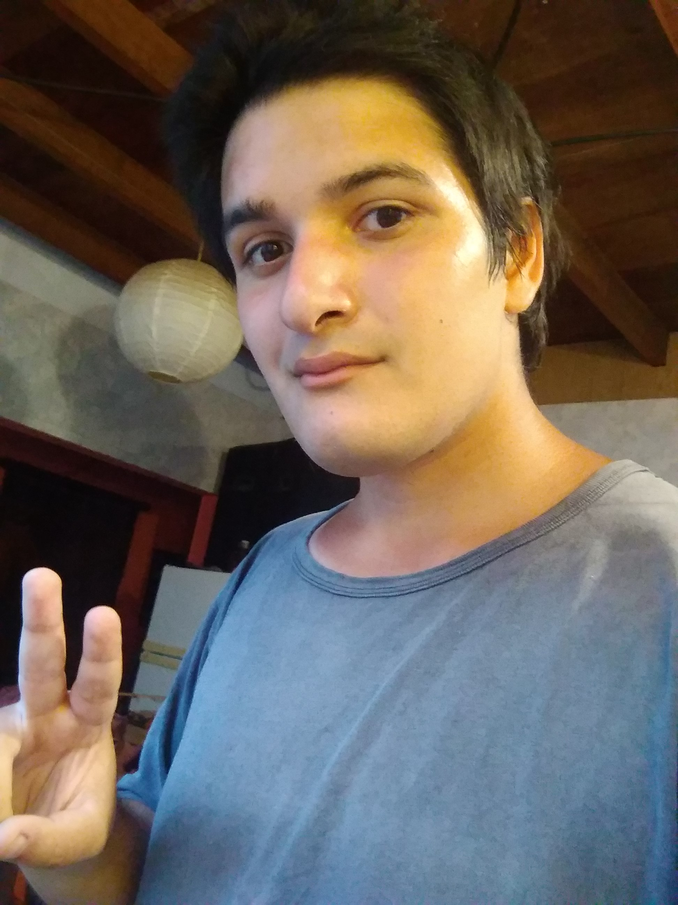

Curriculum vitae

DATOS
-NOMBRE: Lucas Emir José
-SEXO: Masculino
-CONTACTO: kuyostudio@gmail.com
-LUGAR DE RESIDENCIA: Mar del Plata, Buenos Aires, Argentina
EDUCACIÒN
-FORMACION ACADÉMICA: Bachiller completo ciclo 2009-2015 en Escuela Secundaria Nº 7 con orientación en Comunicación.
EXPERIENCIAS LABORALES
-Ayudante de carpintería (limpieza de espacio de trabajo y herramientas, atención a clientes, armado de muebles, compra de insumos y tareas de fuerza entre otros).
-Repartidor de pedidos de corta distancia en emprendimiento gastronómico familiar.
SKILLS
-Idioma Español nativo e Inglés medio
-Excelente aprendizaje, trabajo en equipo y presencia
-Buen manejo de Windows y programas audio visuales y de modelado 3D (Adobe Photoshop, Ilustrator, Sony Vegas Pro, Blender, Unity 3D)
HOBBIES
-Dibujar en papel, hacer ilustraciones digitales, modelar skateparks para Skater Xl, editar imagen/video, modificar juegos, andar en skate.